Chapter 5 Results
5.1 Global Data Analysis
Our analysis begins with our global data by countries. We would like to investigate key characteristics for each country, and look at if there exists any correlation to the impact of COVID on the country or if they reflects the effectiveness of controlling the spread of COVID within the country.
5.1.1 Country selection based on Economics and Health Indicators
In this section, we want to look at key economics and health indicators in order to select countries that are representative to our analysis on a case-by-case basis. We first begin with the relationship between economic indicators such as GDP (domestic production capability by country) and GDP per capita (domestic production capability normalized by the population).
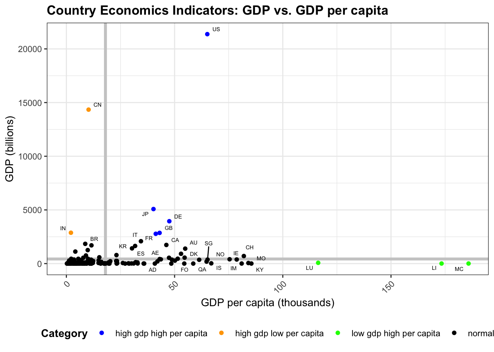
From the scatter plot of GDP vs. GDP per capita, we seperated the graph by two bolded grey lines, which are the mean GDP and mean GDP per capita values across all countries in our dataset. Furthermore, we identified four distinct groups, as indicated in the legend at the bottom of the graph. Countries colored in black are normal or below average countries in both measurements. Countries colored in orange have high GDP (total domestic production), but low GDP per capita (averaged by population). Representative examples include India and China. Countries colored in green have low GDP (total domestic production), but high GDP per capita (averaged by population). Representative examples include Monaco, Liechtenstein and Luxembourg. Countries colored in blue have both high GDP (total domestic production), and high GDP per capita (averaged by population). Representative examples include the US, Japan, Germany, and the UK. We will investigate the representative examples from each category in our further analysis.
The next graph looks at the relationship for countries between GDP per capita and health-related indicator such as life expectancy. We chose these two indicators in order to combine the effects from economic and health. Furthermore, we chose GDP per capita and life expectancy since these two variables are both calculated in the per person basis, making the comparison plausible and meaningful.
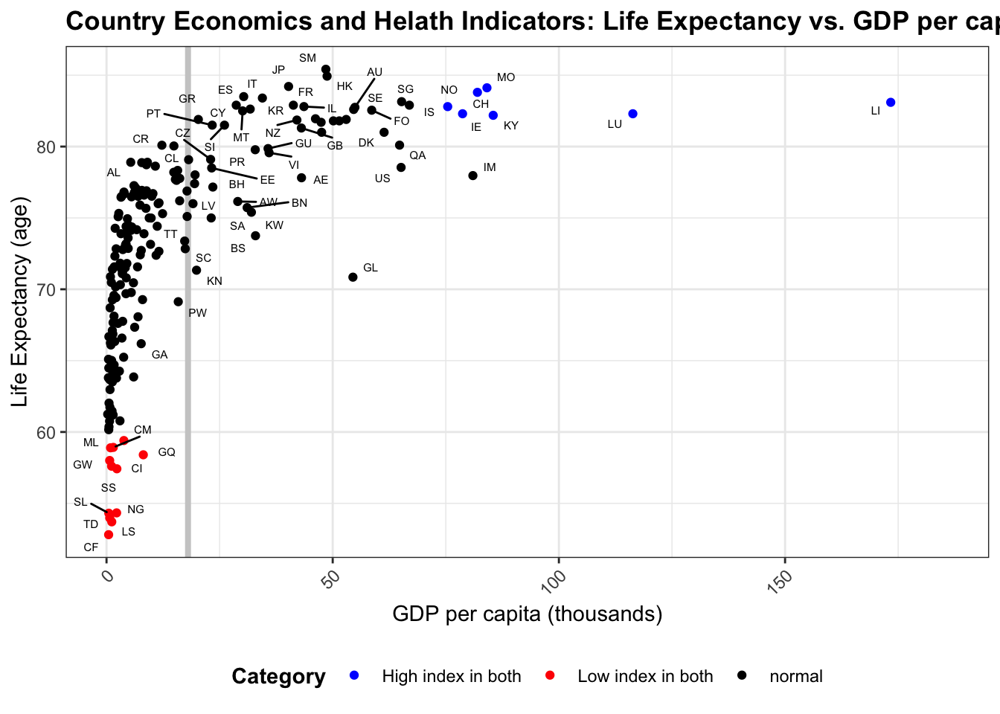
From the scatter plot above, the graph is divided by two bolded grey lines indicating the average life expectancy and average GDP per capita across all countries in the dataset. We labelled two distinct categories which have high index in both measurements and low index in both measurements. Representative countries in the high index group include Liechtenstein, Luxembourg, Ireland, China, and Macao. Representative countries in the low index group include Central African Republic, Lesotho, and Chad. We noticed that most countries with high indices are from Europe or East Asia, whereas most countries in the low index group are from Africa. Notice that we dropped the countries with no records of life expectancy recorded, so there could be some missing countries which require further investigation in the future.
5.1.2 Comparison of cumulative confirmed and deceased COVID cases for representative countries
Now, let’s look further into the representative countries filtered by the indicators we selected above. First, let’s look at the cumulative confirmed and deceased COVID cases for one representative country from each of the three distinctly colored (non-black) groups from GDP vs. GDP per capita scatter plot. The countries we chose are CN, IN (from high gdp, low per capita), US, JP (from high gdp, high per capita), and MC, LI (from low gdp, high per capita). Each time series record starts from 2020-01-01 and goes until the current date.
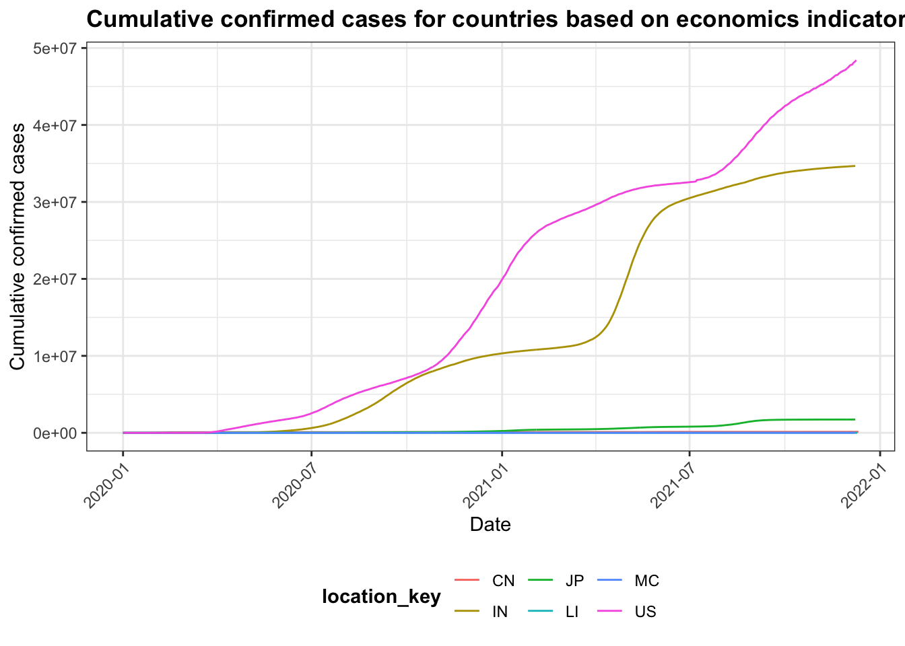
From the cumulative confirmed plot above, we see that the countries with the most rapid growth and most cases are the USA and India. The USA is among the group of high GDP and high GDP per capita, whereas India is among the group of high GDP and low GDP per capita. Taking population into account, we expected that China would have similar records as these two countries, which is not verified with this graph. Therefore, we expect that government policy might play a more important role than economic conditions alone.
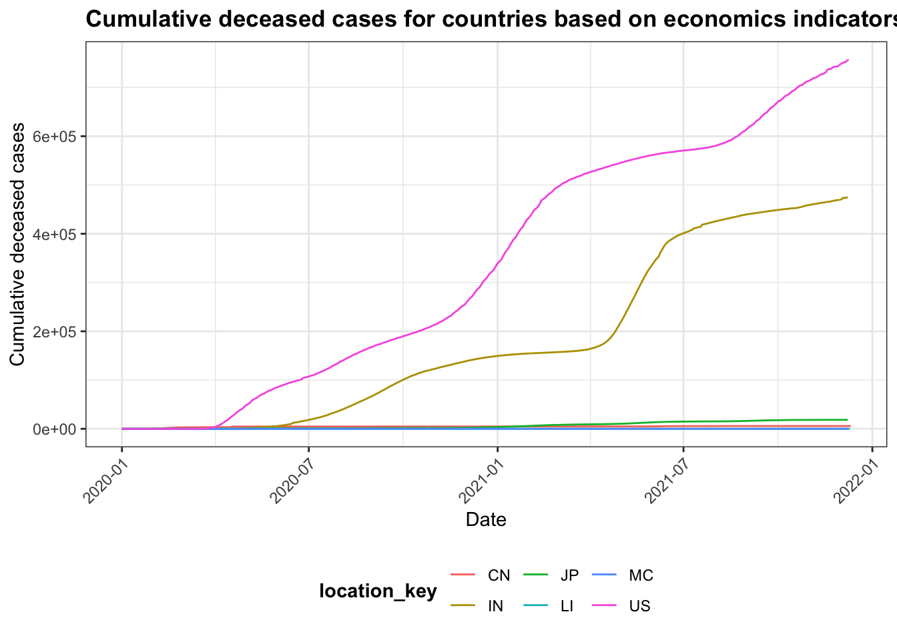
From the cumulative deceased plot above, the result is quite similar to the cumulative confirmed plot. The USA and India have the most cumulative deceased cases from 2020-01-01 till this current date. This graph also suggests that economic conditions do not indicate in the effectiveness of controlling the spread of COVID-19.
In this part, we will look at countries from each of the 2 distinct groups in the economics and health indicators scatter plot. Specifically, we selected LS, CF (from the group of low index in both GDP per capita and life expectancy), and LU, LI (from the group of high index in both GDP per capita and life expectancy).
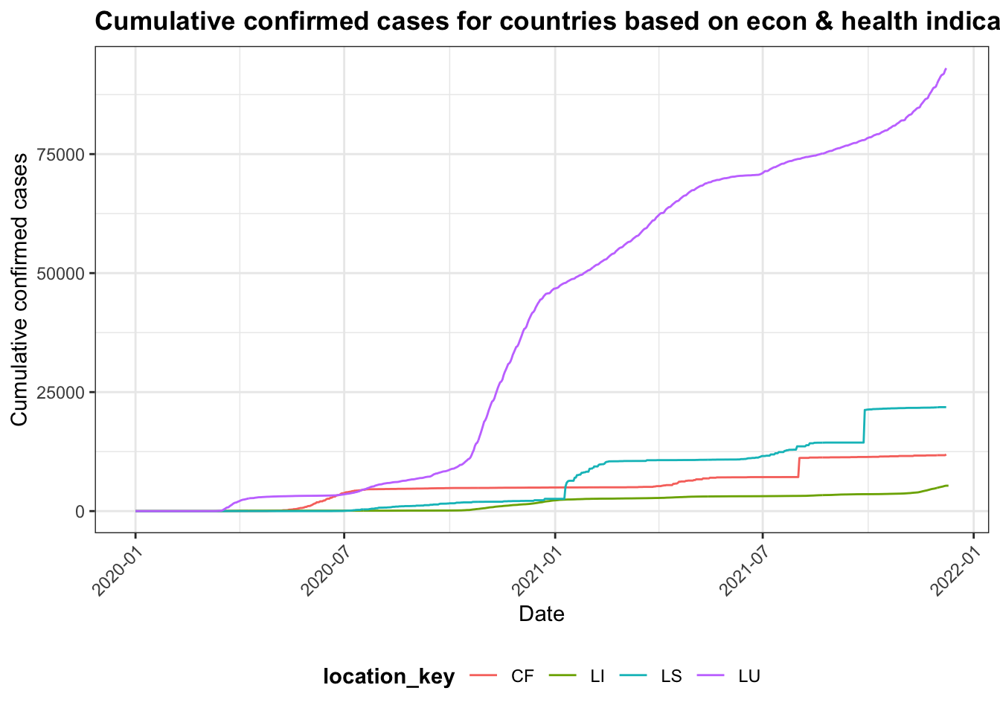
From the cumulative confirmed plot above, we see that Luxembourg has significantly more cases than the other three, followed by Liechtenstein. These two countries are all from the group with high index in both indicators. Their population are also less than Central African Republic and Lesotho by at least 10 times. This insight is surprising in that the countries with high econ and health conditions, as measured by the indices, are actually outperforming in the number of confirmed cases. Let’s look further into the deceased number for a comparison.
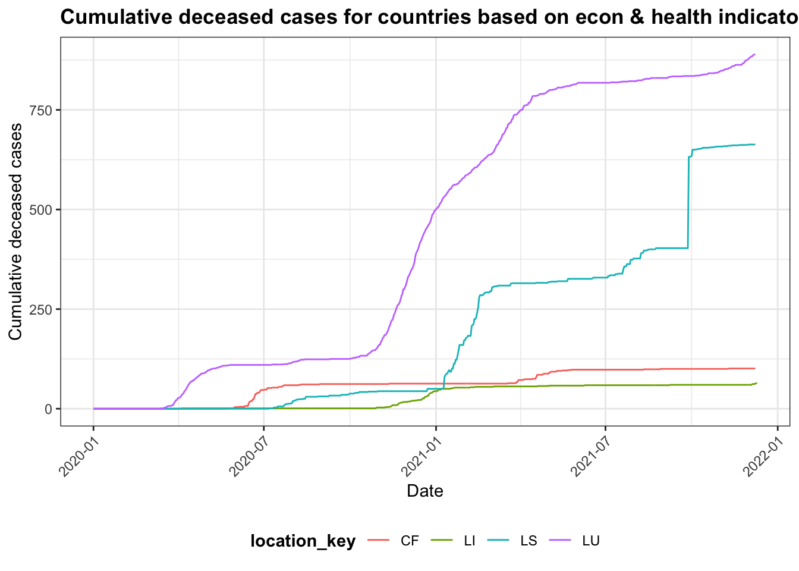
From the cumulative deceased plot above, we see that the ranking, in terms of the four countries’ cumulative deceased numbers, have not changed. However, the difference in magnitude of the cumulative deceased between Luxembourg and Liechtenstein decrased compared to the confirmed plot above. This could indicate that among the confirmed cases, there are fewer deceased cases in Luxembourg compared to Liechtenstein, which in a way reflected the superior medical treatments from Luxembourg.
5.1.3 Relationship between health indicators and COVID mortality rate
As seen from the previous sections, we compared representative countries filtered by their economic or economic & health conditions. As a result, we notice that health conditions, from the health indicators, provides more insight into the country’s responses to the COVID. More specifically, we noticed that a country’s power of medical treatment can be reflected by the proportion of cumulative deceased over the cumulative confirmed cases. Here we will denote it by the COVID mortality rate.
Let’s look at the distributions of key health indicators, and COVID mortality rate (cumulative deceased / cumulative confirmed) acorss all countries at the most recent date (e.g. 2021-12-11).
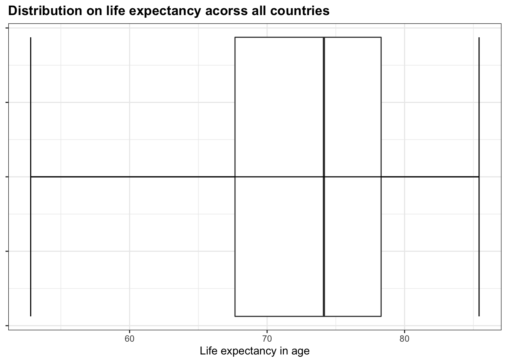
From the above boxplot, we get the distribution of life expectancy acorss all countries in our dataset. Within the box, the interquartile range (IQR) suggests that the majority (middle 50%) of people live until their late 60s to their late 70s, with the entire range from early 50s till late 80s. This plot gives us a general idea of the distribution and porportion of life expectancy.
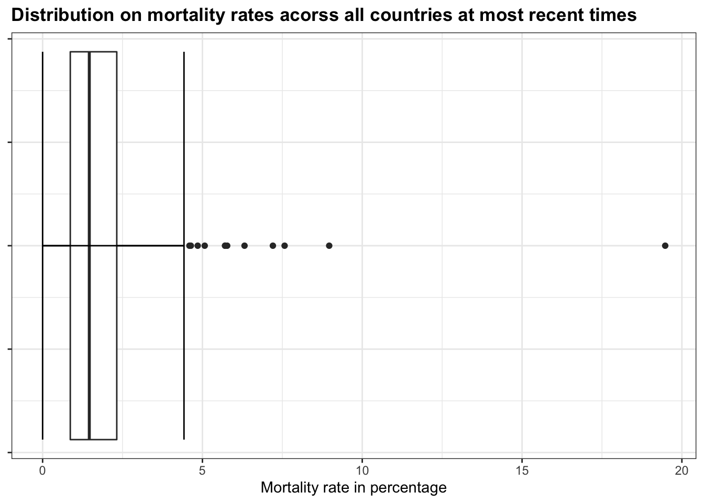
## # A tibble: 1 × 6
## location_key date country_name cumulative_confirmed cumulative_deceased
## <chr> <date> <chr> <dbl> <dbl>
## 1 YE 2021-12-08 Yemen 10047 1957
## # … with 1 more variable: mortality_rate <dbl>As in the previous section, we noticed that the proportion of cumulative deceased to the cumulative confirmed (denoted as mortality rate) could give us an idea of the treatment for the country on COVID. Therefore, we use the boxplot on the mortality rate (in percentages) to further investigate the distribution. We noticed that the majority (almost 100%) of the countries have mortality rates below 5%, with several exceptions shown as outlier dots in the graph. Interestingly, there is one country whose mortality rate is close to 20%, which is huge given the distribution of all the other countries. The country is Yemen, shown above. By looking at the distribution, we were able to make some important discoveries.
Quantile values for mortality rates:
## 0% 25% 50% 75% 100%
## 0.0000000 0.8657044 1.4606402 2.3202494 19.4784513Quantile values for life expectancy:
## 0% 25% 50% 75% 100%
## 52.80500 67.66500 74.13100 78.29268 85.41707Following the boxplots, we computed the quantile values for each distribution, shown explicitly in values for the corresponding boundaries in the boxplots. Now, we can group each variable (mortality rate and life expectancy) into three distinct groups: Low - the value is within the lower 25% in the distribution; Medium - the value is within the middle 50% in the distribution; Top - the value is within the top 25% in the distribution. We can then look at the relationship between groups within each variable using the mosaic plot.
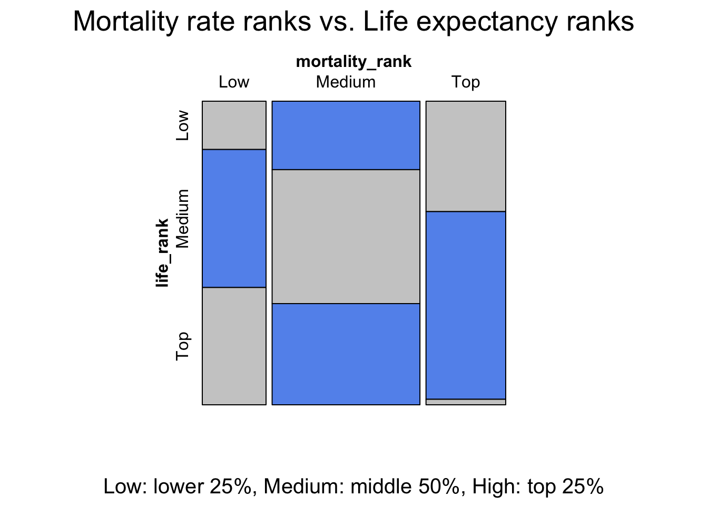
From the mosaic plot, we can see several interesting discoveries. Across the countries with non-null mortality rates and life expectancy, the group of countries with medium life expectancy consists of the majority portion of all groups in the mortality rate variable, suggesting their mortality rates have a wide range of variations. The countries in the group with high life expectancy has the least amoung of proportion in the group with high mortality rates. This makes sense intuitively as countries with high life expectancy typically is associated with good medical conditions as well as living conditions.
By looking at two economic indicators (GDP and GDP per capita) and one health indicator (life expectancy) both across the entire dataset and also into specific representative countries, we were able to investigate the overall distributions in one or more variables of interests, time-series trends between selective individuals within groups, as well as relationships between groups for multiple variables. We notice that economic conditions have a less noticable association to COVID analysis compared to health indicators. In this project, we only touched upon life expectancy. However, if you would want to look more into different health indicators provided, you can choose your own by looking at our interactive component section, which we provided a visual scatterplot for different health indicators to assist future analysis.Link to the interactive scatterplots
5.2 US State Level Analysis
After the global analysis, we would like to focus more on the U.S. and perform state-level analysis on our data. We are interested in the differences in government reacting time and mobility change percentage between democratic states (blue states) and republican states (red states) as well as the popularity of each type of vaccines. We categorized Democratic and Republican states based on this link.
5.2.1 Differences in government reacting time between blue states and red states.
We use the number of days it takes for the state government to publish first mitigation policy after the first Covid case is confirmed in the state as a measurement of how fast the government reacts to the pandemic. We extract the date that the first mitigation policy is published (First Mitigation Date) and the date that the first Covid case is confirmed (First Case Date) for each state from our dataset and subtract them to get the variable that indicates the reacting time of the government of each state. We then draw pair barplot to exhibit the difference between the blue states and the red states.
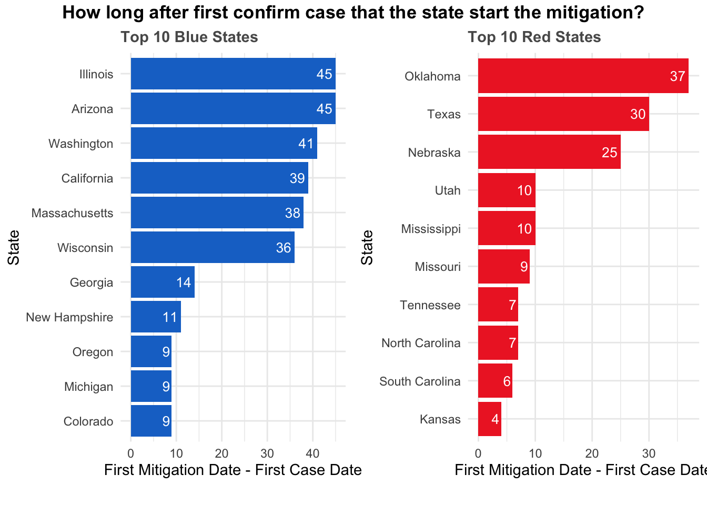
The above plot is consist of two parts, a horizontal bar chart for the ten blue states that reacts the slowest and another bar chart for the ten red states that reacts the slowest. The length of bars indicate how many days after the first case of Covid-19 is confirmed in the state that the government publish the first mitigation policy. By making a pair bar chart of blue states and red states side by side, it is clear that blue states react slower than red states in general. To dive deeper into the distribution of the reacting time of blue states and red states, a pair boxplot is presented down below.
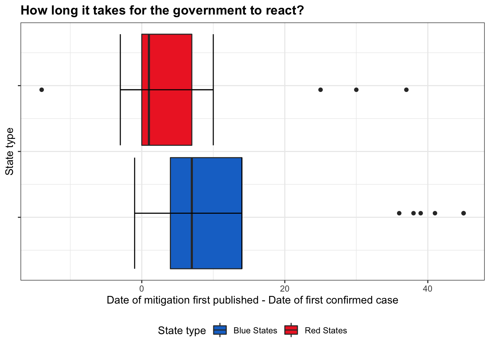
The pair boxplot provides us a glance into the distribution of the reacting time of blue states and red states. The red boxplot corresponds to the red states and the blue boxplot to the blue states. This plot further confirms our findings that blue states react slower than the red states in general.
5.2.2 Differences in average percentage change of visits to retial and recreation between blue states and red states.
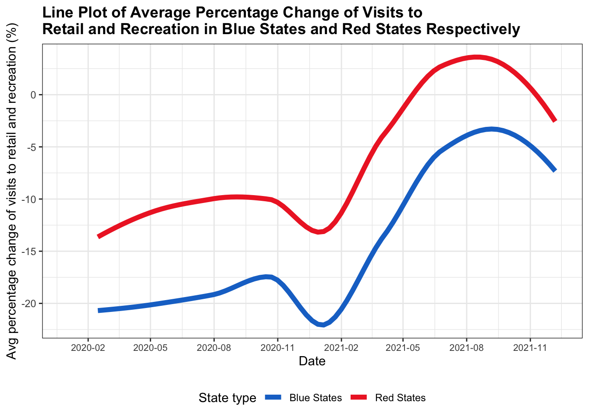
Even though the red states react faster than the blue states, it seems that the policies of the blue states are more effective than that of the red states. From the above line plot, it is clear that the average percentage change of visits to retail and recreation of blue states is lower than that of the red states at any time from Febrary 2020 to December 2021. In other words, the amount of visits decreased is larger in blue states than in red states, indicating that people in the blue states regulate their visits more than the people in the red states.
5.2.3 Difference in the popularity of each type of vaccines.
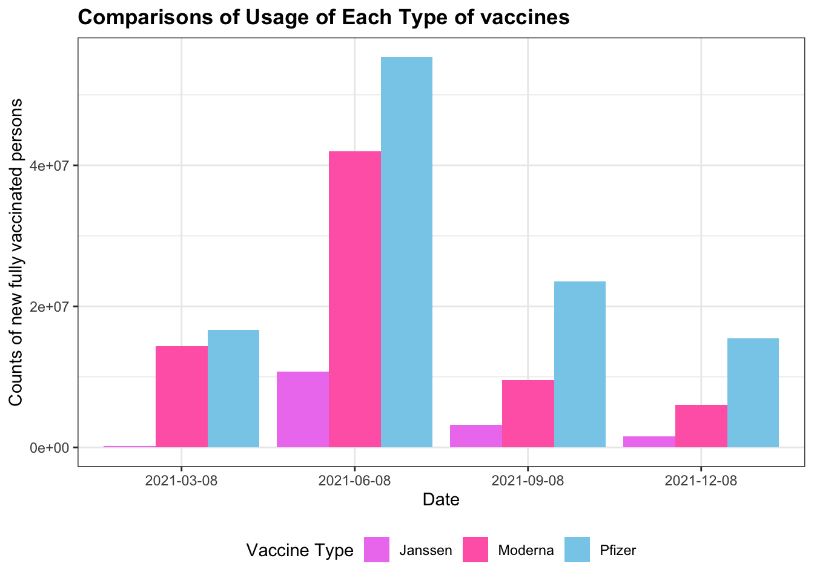
From the vaccination table, we generate a quarterly report of the usage of each type of vaccines. The ranking of the popularity of each type of vaccines is consistent across all quarters. Vaccines that are used the most are those produced by Pfizer, followed by those produced by Moderna, and those produced by Janssen are used the least. This finding indicates that vaccines produced by Pfizer are the most popular ones, probably for their effectiveness and reliability.